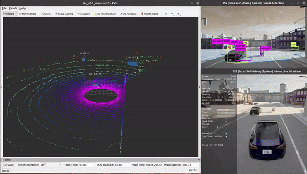
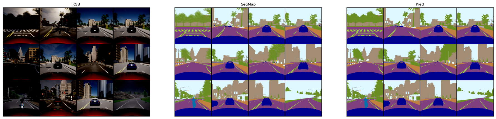

感知¶
感知模块简介¶
ISS感知模块为多种感知任务提供支持，例如3D障碍物感知、2D物体识别、2D语义分割和基于传感器的鸟瞰图（Bird's Eye View, BEV）地图生成。我们的团队专注于开发和完善这些关键的感知任务。这些任务是使我们的车辆能够安全、精确地在复杂环境中行驶的基础。
任务¶
ISS 感知模块支持的不同任务使我们的车辆能够了解周围环境及其元素的特定属性。
-
3D 障碍物检测：我们的系统采用先进的传感器技术来实时检测和分析三维障碍物。即使在动态和具有挑战性的场景中，这种功能也使我们的自动驾驶车辆能够做出明智的决策并确保安全导航。
-
2D 物体检测：识别和识别车辆周围环境中的物体对于安全导航至关重要。我们的框架利用尖端算法来识别和分类各种对象，例如行人、车辆和标牌，有助于增强态势感知。

-
2D 语义分割：语义分割是详细了解环境的一项重要任务。我们利用最先进的技术将场景划分为有意义的部分，使我们的车辆能够理解道路布局并更好地响应复杂的城市景观。

-
基于传感器的 BEV 地图生成：我们的系统使用传感器数据生成鸟瞰图 (BEV) 地图，提供车辆周围环境的整体视图。该地图是路径规划和决策的宝贵工具，可增强车辆高效、安全导航的能力。
目前，我们正在努力开发这些模块，我们很高兴地告诉大家，我们已经为前三个任务开发了初始模型。然而，值得注意的是，这些模型仍在不断完善，以提高其性能和可靠性。
我们还提供了有关 ISS 生成的物体检测的 数据集 。仍在更新。
目标检测¶
在 Carla 中使用 YOLOv3 检测目标。
安装¶
将git仓库克隆下来
git clone https://github.com/jiandaoshou-aidehua/self-driving-experiments-in-carla.git
-
进入object_detection_with_yolov3
-
创建 conda 环境：
conda create -n yolo python=3.7
conda activate yolo
注意：运行脚本的时候会提示安装包！除Carla Client API为0.9.12与Carla对应，其他安装最新的。
-
导入模块：
pip install -r requirements.txt -
下载weights文件
weights文件链接：https://pan.baidu.com/s/184hR_PQZttYeAz9QE4XOQg 提取码：hyus
将weight文件放在weights目录下。
运行¶
1.连接Carla服务端
./CarlaUE4.sh
2.运行脚本生成车辆和行人
python3 spawn_npc.py -n 80
注意: spawn_npc.py 在
PythonAPI/examples，该测试是在Carla-0.9.12，最新版Carla没有spawn_npc.py,但是会出现行人倒着走的问题，不妨使用generate_trrafic.py。
3.执行python3 object_detection.py
用GPU执行
如果需要 GPU 计算, 安装 nvidia-cuda-toolkit。
pip install yolo34py-gpupython3 object_detection_gpu.py